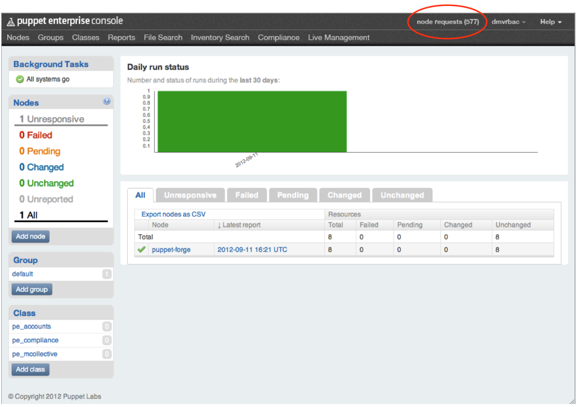
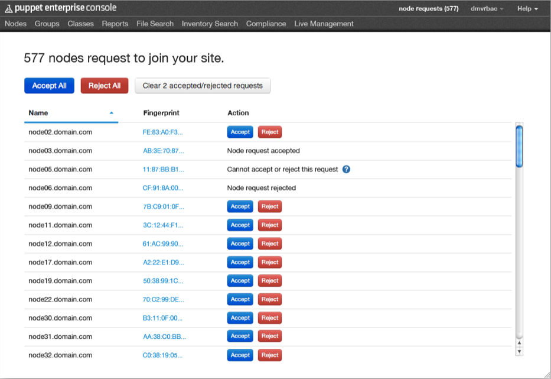

Working with Node Requests
Intro/Overview
In previous versions of PE, sysadmins had to use the command line on the puppet master to manually approve or reject certificates from agent nodes attempting to join the site. Node request management is a new capability of the PE console which allows sysadmins to view and respond to requests graphically, from within the console. This means nodes can now be approved without needing access to the puppet master. For further security, node request management supports the console’s user management system: only users with read/write privileges can take action on node requests.
Once the console has been properly configured to point at the appropriate Certificate Authority, it will display all of the nodes that have generated Certificate Signing Requests (CSRs). You can then approve or deny the requests, individually or in a batch.
For each node making a request, you can also see its name and associated CSR fingerprint.
Viewing Node Requests
You can view the number of pending node requests from anywhere in the console by checking the indicator in the top right of the main menu bar.

Click on the pending nodes indicator to view and manage the current requests.
You will see a view containing a list of all the pending node requests. Each item on the list shows the node’s name and its corresponding CSR’s fingerprint. (Click on the truncated fingerprint to view the whole thing in a pop-up.)
If there are no pending node requests, you will see some instructions for adding new nodes. If this is not what you expect to see, the location of your Certificate Authority (CA) may not be configured correctly.
Rejecting and Approving Nodes
The ability to respond to node requests is linked to your user privileges. You must be logged in to the console as a user with read/write privileges before you can respond to requests.
Use the buttons to accept or reject nodes, singly or all at once. Note that once a node request is approved, the node will not show up in the console until the next puppet run takes place. This could be as long as 30 minutes, depending on how you have set up your puppet master. Depending on how many nodes you have in your site total, and on the number of pending requests, it can also take up to two seconds per request for “Reject All” or “Accept All” to finish processing.

In some cases, DNS altnames may be set up for agent nodes. In such cases, you cannot use the console to approve/reject node requests. The CSR for those nodes must be accepted or rejected using puppet cert on the CA. For more information, see the DNS altnames entry in the reference guide.
In some cases, attempting to accept or reject a node request will result in an error. This is typically because the request has been modified somehow, usually by being accepted or rejected elsewhere (e.g. by another user or from the CLI) since the request was first generated.
Accepted/rejected nodes will remain displayed in the console for 24 hours after the action is taken. This interval cannot be modified. However, you can use the “Clear accepted/rejected requests” button to clean up the display at any time.
Working with Requests from the CLI
You can still view, approve, and reject node requests using the command line interface.
You can view pending node requests in the CLI by running
$ sudo puppet cert list
To sign one of the pending requests, run:
$ sudo puppet cert sign <name>
For more information on working with certificates from the CLI, see the Puppet tools guide or view the man page for puppet cert.
Configuration Details
-
By default, the location of the CA is set to the location of PE’s puppet master. If the CA is in a custom location (as in cases where there are multiple puppet masters), you will have to set the
ca_serverandca_portparameters in the/opt/puppet/share/puppet-dashboard/config/settings.ymlfile. -
When upgrading PE from a version before 2.7.0, the upgrader will convert the currently installed auth.conf file to one that is fully managed by Puppet and which includes a new rule for request management. However, if auth.conf has been manually modified prior to the upgrade, the upgrader will NOT convert the file. Consequently, to get it working, you will need to add the new rule manually by adding the code below into
/etc/puppetlabs/puppet/auth.conf:path /certificate_status method find, search auth yes allow pe-internal-dashboard
Request Management Modules
PE installs three modules needed for node request management: puppetlabs-request_manager, puppetlabs-auth_conf, and ripienaar-concat. It also upgrades the puppetlabs-stdlib module to v.2.5.1.
The puppetlabs-auth_conf module contains a new defined type: auth_conf::acl. The type takes the following parameters:
| parameter | description | value types | default value | required |
|---|---|---|---|---|
| path | URL path of ACL | string | $title | no |
| acl_method | find, search save, delete | string, array | no | |
| auth | yes, no, any | sring | yes | no |
| allow | certnames to access path | array | [ ] | no |
| order | order in auth.conf file | string | 99 | no |
| regex | is the path a regex? | bool | false | no |
| environment | environments to allow | string | no |